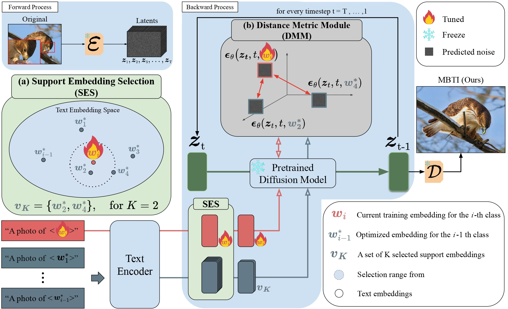
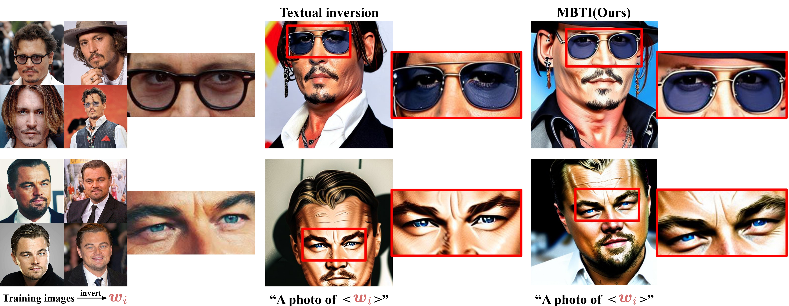

MBTI: Metric-Based Textual Inversion
for Fine-Grained Image Classification
Abstract
Personalizing text-to-image diffusion models from only a few images per class remains challenging, especially for fine-grained categories where class-defining cues are subtle. We introduce Metric-Based Textual Inversion (MBTI), a plug-and-play objective that augments textual inversion by explicitly enlarging inter-class margins in the text-embedding space while preserving denoising fidelity. MBTI (i) selects the most confusable previously learned classes as support embeddings via cosine similarity (SES), (ii) contrasts predicted noises under the same diffusion state (timestep and noise) between the supports and the current token (DMM), and (iii) stabilizes training with a time-weighted regularizer aligned to the diffusion objective. Across Flowers102, NABirds, FGVC-Aircraft, Stanford Cars, COCO, and PASCAL VOC, MBTI produces more representative samples and improves few-shot classification under augmentation-for-classification. MBTI requires no model fine-tuning and integrates seamlessly with existing personalization pipelines.
Method (Framework)

Qualitative Results



Quantitative Results

Red = best, Blue = second-best.
BibTeX
@inproceedings{mbti2026,
title={MBTI: Metric-Based Textual Inversion for Fine-Grained Image Classification},
author={Chae, Byungkwan and Choi, Youngjae and Kim, Heewon},
booktitle={WACV},
year={2026},
url={https://theplace75.github.io/MBTI/}
}